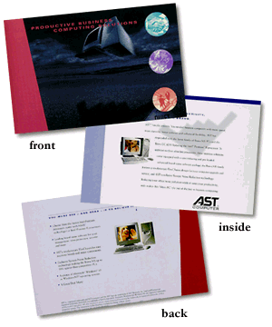

Bravo Direct Mail Piece:

Inside Copy:
EXPAND YOUR PRODUCTIVITY
SIMPLY AND SILENTLY - WITH BRAVO.
Introducing the new Bravo MS, the industry's first "Quiet PC" with AST's exclusive System Noise Reduction (SNR) technology, making the Bravo MS up to 70% quieter than the competition. AST continues to fulfill your business computing needs with this high-performance network solution, which comes equipped with the industry's first NLX push-button FlexChassis design for easy upgrades and servicing. It also features industry leading brand name manageability software and offers a full range of Intel Pentium II and Pentium processors with MMX technology, allowing for unsurpassed power and performance. All of this combined with AST's superior service and support make the Bravo MS the easiest PC in the industry to purchase, maintain and manage. So give your company the tools for success. Check out the Bravo MS.
Back Copy:
YOU MUST SEE IT - AND HEAR IT - IT TO BELIEVE IT
- Choose from the fastest Intel Pentium II and Pentium processors with MMX technology for power to run all of your demanding applications.
- AST's revolutionary FlexChassis design allows easy access to boards and major components.
- AST's exclusive System Noise Reduction technology makes the Bravo MS up to 70% quieter than competitive PCs
- Industry leading brand name software for asset management, virus protection, security and more.
- A choice of Microsoft Windows 95 or Windows NT operating systems.
- A Great Deal More!

Order on-line